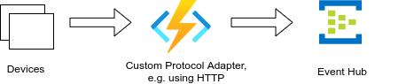
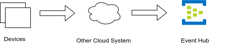

Using a separate Event Hub¶
In addition to the built-in Event Hub of your IoT Hub you can use a separate Event Hub as well.
Scenario 1¶
An Event Hub receives messages from IoT Hub through message routing or via an Azure Function transformation.
Scenario 2¶
It's also possible that you do not use an IoT Hub at all, but send messages to the Event Hub by other means. For example when devices communicate via a legacy protocol not supported by IoT Hub. There is a custom protocol endpoint, e.g. realized using an Azure Function, that the devices connect to.

Scenario 3¶
Data is received not from devices directly but via some other cloud.

Using ux4iot with Event Hubs¶
In Scenario 1 all hooks can be used. You only need to configure ux4iot with the connection string of the Event Hub instead of the connection string of the Event Hub compatible endpoint of IoT Hub. In scenario 2 and 3, which do not include an IoT Hub at all, the following hooks can be used:
- useTelemetry
- useMultiTelemetry
- useConnectionState
- useMultiConnectionString
- useD2CMessages
When you send messages to Event Hub, they must adhere to the following requirements:
- They must have a property
iothub-connection-device-idcontaining the device identifier - They must have a property
iothub-message-schema. The value of this property must beTelemetry. - You can optionally set the timestamp of the data with the
iothub-creation-time-utcproperty. The value must be in ISO 8601 format, e.g. "2022-01-01T12:00:00.000Z". If it is not set, the current server timestamp is used instead.
Warning
If you send the messages from IoT Hub through message routing, these properties are automatically set. If you're using the eventhub instead, the ux4iot consumes messages and tries to determine which timestamp to use.
Timestamp Resolution:
timestamp =
event.body[CUSTOM_TIMESTAMP_KEY] ||
event.properties['iothub-creation-time-utc'] ||
event.properties['iothub-app-iothub-creation-time-utc']
if the timestamp is not defined afterwards it will use
timestamp =
event.systemProperties.['iothub-enqueuedtime'] ||
event.properties.['iothub-enqueuedtime']
if the timestamp is still not defined it will use the time that the message is consumed by ux4iot.
Here is an example of sending a message to an Event Hub using Node.js:
const { EventHubProducerClient } = require("@azure/event-hubs");
const eventHubName = "ux4iot-input";
const { EVENT_HUB_CONNECTION_STRING} = process.env;
function getRandomInt(max) {
return Math.floor(Math.random() * Math.floor(max));
}
async function main() {
// Create a producer client to send messages to the event hub.
const producer = new EventHubProducerClient(EVENT_HUB_CONNECTION_STRING, eventHubName);
const now = new Date();
const body = {
temperature: 42.1,
pressure: 10.9,
};
const properties = {
"iothub-connection-device-id": "some-device",
"iothub-message-schema": "Telemetry",
"iothub-creation-time-utc": now.toISOString()
};
const batch = await producer.createBatch();
batch.tryAdd({ body, properties });
await producer.sendBatch(batch);
await producer.close();
}
main().catch((err) => {
console.log("An error occurred: ", err);
})
Instead of passing the device ID and the timestamp through message properties, you can also specify them inside of the message. You need to configure your ux4iot instance with the parameters: customTimestampKey and customDeviceIdKey. If you e.g set them to _ts and deviceId respectively, you can also send the following message: